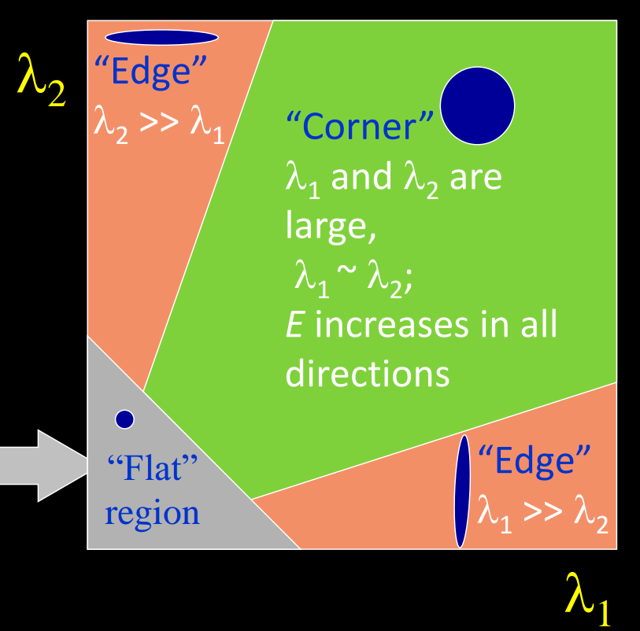
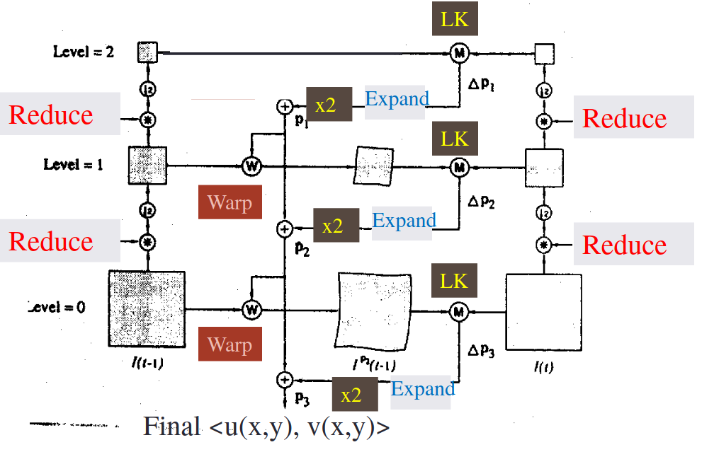
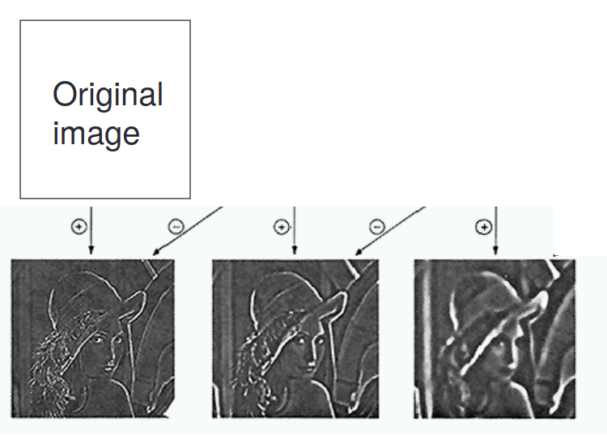
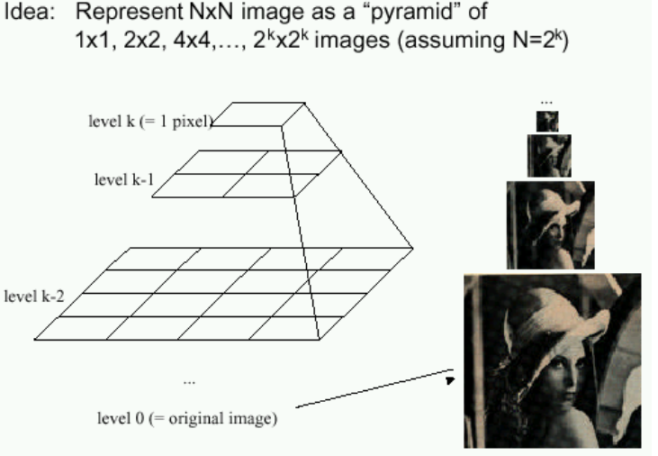
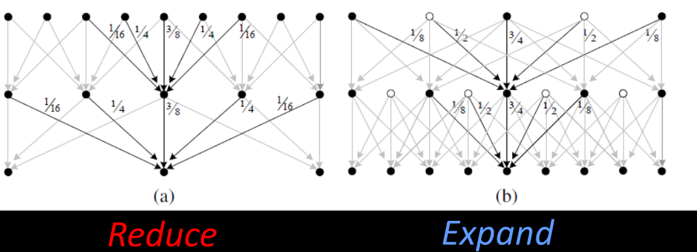

Dense flow: Lucas and Kanade
Recall gradient component of flow:
Solving the aperture problem:
Basic idea: Impose local constraints to get more equations for a pixel.
- e.g: assume that the flow field is smooth locally.
1. Lucas Kanade
1.1 Assumption
Assume the pixel's neighbors have the same :
- If we use a 5x5 window, that gives us 25 equations per pixel. This time, we have more equations than unknowns.
1.2 Least Squares
Thus, we can use the standard least squares method on over-constrained system to find the best approximate solution: , or in matrix form:
Minimize
1.3 Conditions for solvability
When is this solvable?
- should be invertible
- So should be well-conditioned: should not be too large (: larger eigenvalue)
Recall the Harris corner detector: is the second moment matrix, the eigenvectors and eigenvalues of relate to edge direction and magnitude.

1.4 Errors in Lucas-Kanade
Brightness constancy does not hold:
Do exhaustive neighborhood search with normalized correlation - tracking features – maybe SIFT – more later….
A point does not move like its neighbors:
Motion segmentation
The motion is large (larger than a pixel) - Taylor doesn't hold
- Not-linear: iterative refinement
- Local minima: coarse-to-fine estimation
2. Hierarchical LK
Hierarchical Lukas-Kanade is used if the motion is too big. To overcome aliasing, coarse-to-fine estimation is used.
2.1 General idea
we can make large changes seem smaller by just making the image smaller. To do that, we introduce the idea of Gaussian Pyramids.
We create a Gaussian pyramid for each of our images in time, then build our motion field from the lowest level.


2.2 Steps
We start at the highest level in the image pyramids which contain the smallest images. We calculate the flow field using standard (or iterative) Lucas-Kanade. This flow field is small, but if we expand the image and double the flow field, we can get a rough approximation of the next pyramid's flow field.
With that approximate flow field, we can warp (Image Rectification) the actual towards . This generate "intermediate" image.
2.2 Procedure

Compute Iterative LK at level
Initialize at size of level
For each level from to 0:
Upsample (expand) to create flow fields of now twice resolution as level
Multiply by 2 to get predicted flow
Warp level Gaussian version of according to predicted flow to create
Apply LK between and level Gaussian version of to get (the correction in flow)
Add corrections to obtain the flow at i-th level, i.e.:
3. Image Pyramid
3.1 Laplacian Pyramid

3.2 Gaussian Pyramid (image pyramid)

3.3 Computing the Laplacian Pyramid

3.4 Reduce and Expand

Reduce: apply "5-tap" (1 4 6 4 1 ) / 16 separable filter to make reduced image
Expand: Apply different “3-tap” separable filters for even and odd pixels to make expanded image.
4. Sparse Flow
Sparse LK is a variant of Hierarchical Lucas-Kanade that is only applied to interest points.